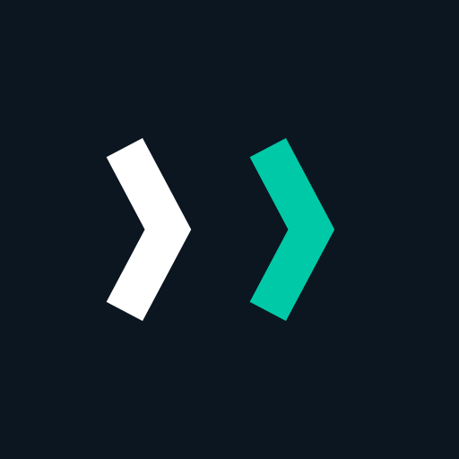
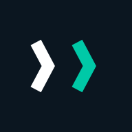
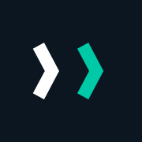
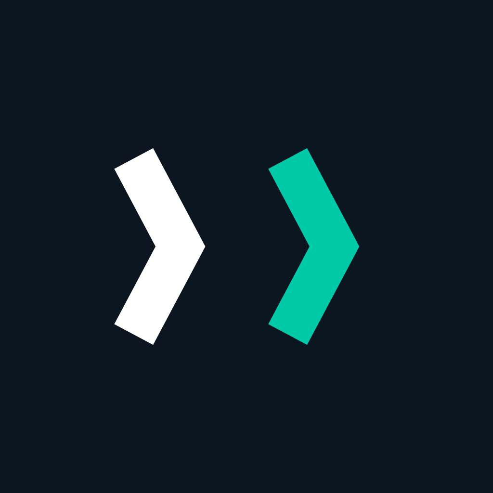

Dua chevron mengarah maju — blok berikutnya. Ini marka resmi NexChain: terkunci, tidak ada varian lain yang dipakai untuk produksi.
● Terkunci · v1
Sembilan bentuk jadi. Pakai yang sesuai latar; jangan membuat kombinasi baru di luar daftar ini.
Minimum 16 px untuk marka, 96 px untuk lockup horizontal. Marka ini lulus 16 px karena hanya terdiri dari dua bentuk gemuk dengan jarak 28 px.
Ruang bebas minimum di keempat sisi = x = 0,25 × tinggi marka. Tidak ada teks, garis, tepi kontainer, atau marka lain yang boleh masuk ke kotak putus-putus.
| Pemakaian | Digital | Cetak |
|---|---|---|
| Marka saja | 16 px | 8 mm |
| Lockup horizontal | 96 px | 24 mm |
| Lockup vertikal | 64 px | 16 mm |
| Favicon / ikon tab | 16 px | — |
| App icon | 48 px | — |
Raster di folder icon/ sudah jadi — tinggal pakai. apple-touch-icon.png sengaja tanpa sudut karena iOS memotongnya sendiri; favicon.ico berisi 16, 32, dan 48 px.




Skala proporsional, dua warna asli, ruang bebas utuh.
Jangan regangkan atau gepengkan. Selalu ubah ukuran secara proporsional.
Jangan memutar marka. Chevron selalu mengarah ke kanan.
Jangan menambah glow, bayangan, atau gradien.
Jangan mengganti warna di luar token palet.
Jangan menurunkan opasitas atau mengubahnya jadi outline tipis.
Di latar gelap biru utama diganti #ffffff; mint tetap. Alasannya kontras: #0784c3 di atas #0b1620 hanya ≈2,3:1 — di bawah ambang 3:1.
Sumber kebenaran selalu SVG. PNG dan ICO adalah turunan — jangan disunting, dan jangan dipakai sebagai acuan bentuk.